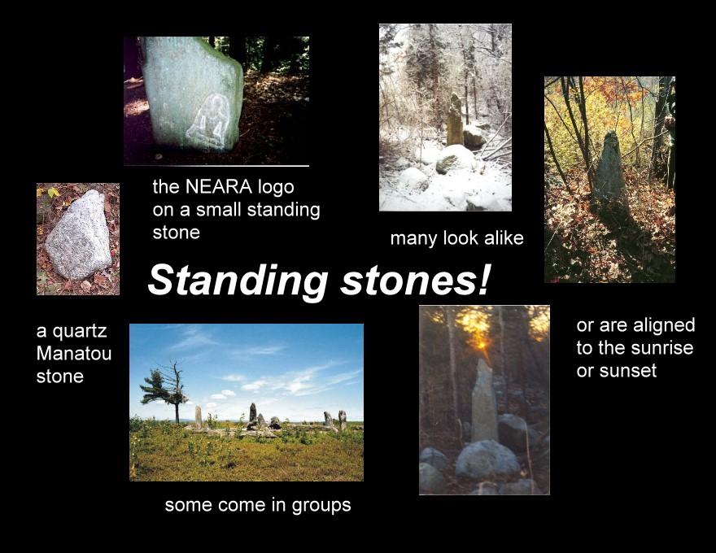

Gallery Examples of Standing Stones
Tall stones standing on the New England landscape memorialize historic events as well as ordinary people. Tall stones serve as cemetery monuments, boundary markers, gate posts and fence supports. Standing stones have served as calendars in prehistoric cultures. They have marked the progress of the solar year telling agricultural people when to plant and had guided the organization of their religious rites and festivals. There is a hill top right here in New England the carries standing stones that mark the seasons.
